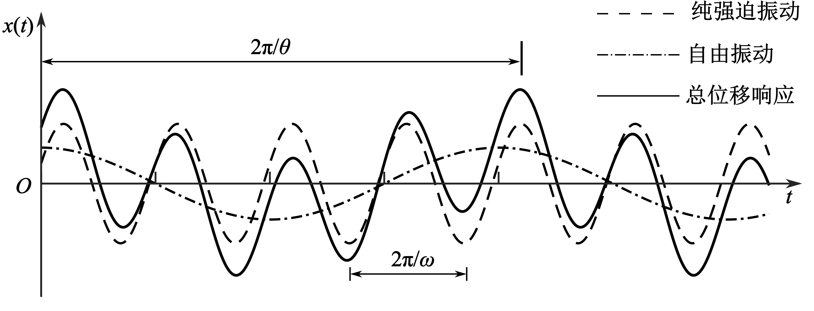
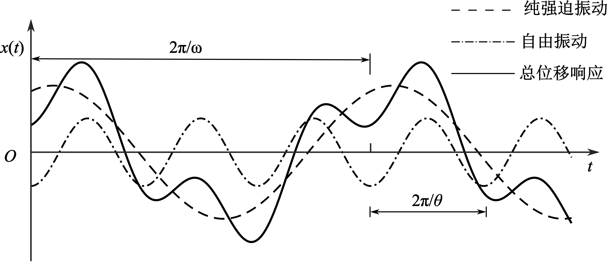
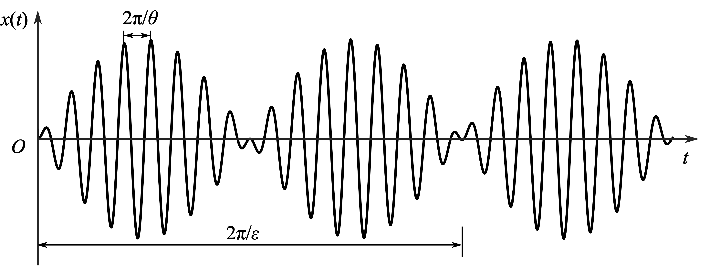
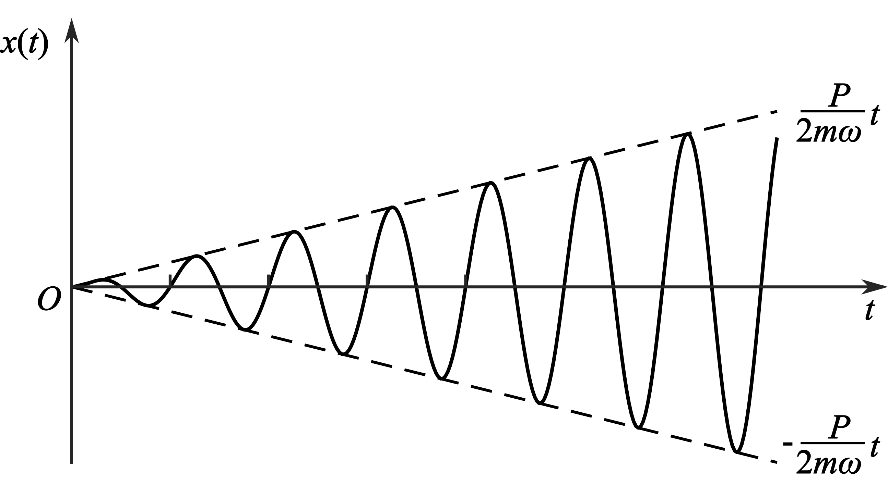
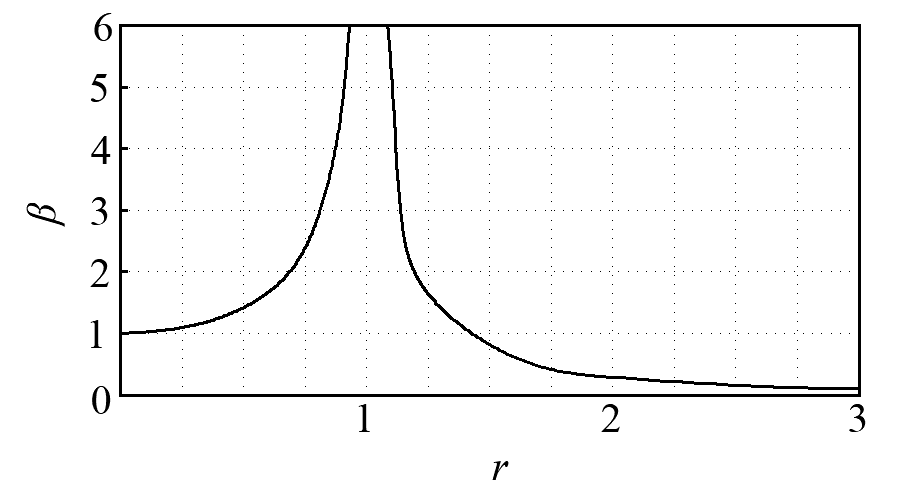
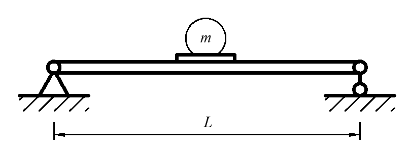
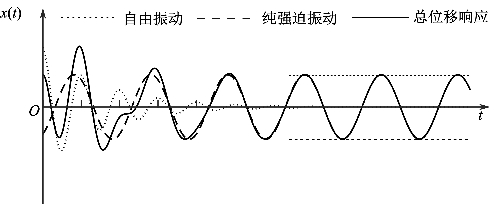
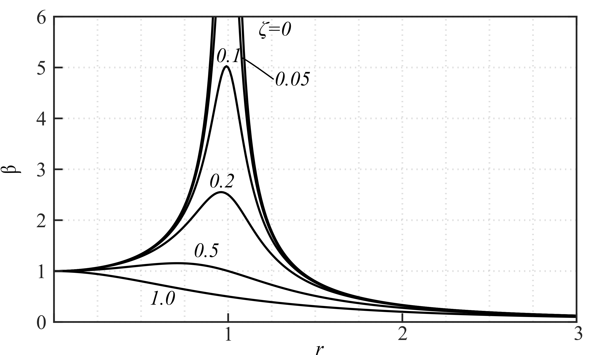
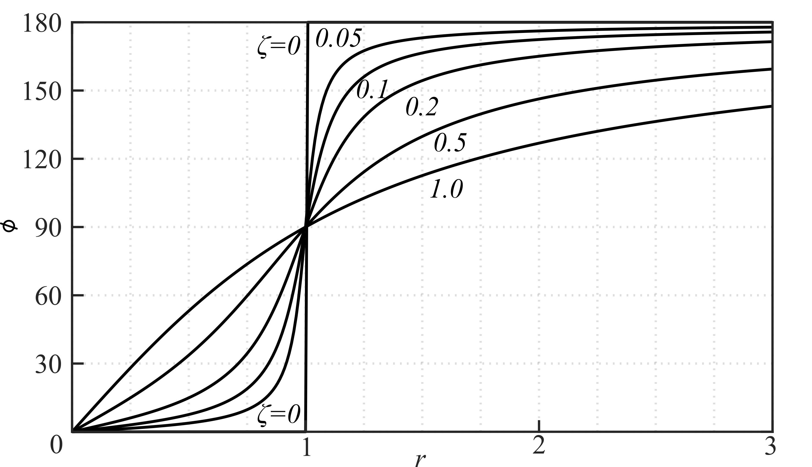
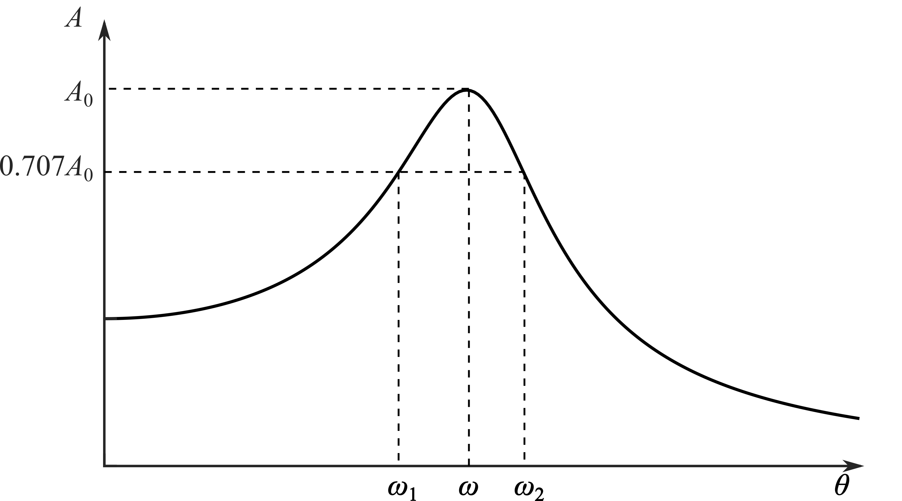

1.3. 简谐载荷作用下的强迫振动
本节讨论系统受到简谐变化的干扰力作用下的强迫振动响应问题。这种干扰力是经常碰到的，如旋转的机械对楼板的作用。首先讨论不考虑阻尼作用的情况，然后讨论考虑阻尼作用的强迫振动。
1.3.1. 无阻尼强迫振动
假定荷载 \(F_{\mathrm{e}}(t)\) 为如下的简谐形式
(1.54)\[
F_{\mathrm{e}}(t)=P\cos\theta t
\]
由式(1.3)可知无阻尼强迫振动方程为
(1.55)\[
m\ddot{x}(t)+kx(t)=P\cos\theta t
\]
或写为
(1.56)\[
\ddot{x}(t)+\omega^{2}x(t)=\frac{P}{m}\cos\theta t
\]
方程(1.56)的通解可由齐次方程的通解和非齐次方程的特解叠加而得。由 \(F_{\mathrm{e}}(t)\) 的形式, 我们不难找到它的一个特解
(1.57)\[
x_{\mathrm{p}}(t)=\frac{P}{m(\omega^{2}-\theta^{2})}\cos\theta t
\]
对应齐次方程的通解已由式(1.12)给定, 则微分方程(1.56)的通解为
(1.58)\[
x(t)=A_{1}\sin\omega t+A_{2}\cos\omega t+\frac{P}{m(\omega^{2}-\theta^{2})}\cos\theta t
\]
由初始条件 \(x(0)=x_{0}\) 及 \(\dot{x}(0)=\dot{x}_{0}\), 不难求得
(1.59)\[
A_{1}=\frac{\dot{x}_{0}}{\omega},\quad A_{2}=x_{0}-\frac{P}{m(\omega^{2}-\theta^{2})}
\]
则式(1.58)可写为
(1.60)\[
x(t)=\frac{\dot{x}_{0}}{\omega}\sin\omega t+x_{0}\cos\omega t-\frac{P}{m(\omega^{2}-\theta^{2})}\cos\omega t+\frac{P}{m(\omega^{2}-\theta^{2})}\cos\theta t
\]
在式(1.60)中, 前 3 项是振动频率为 \(\omega\) 的自由振动。其中前 2 项的系数决定于初始条件, 当初始位移及初始速度都等于零时, 此 2 项也就等于零, 通常称它们为决定于初始条件的自由振动。第 3 项则不管初始条件如何, 都将伴随干扰力的作用而产生, 故可称为伴生的自由振动。至于第 4 项, 则完全按照干扰力频率进行振动, 故称为纯强迫振动。式(1.60)还可以写成
(1.61)\[
x(t)=\frac{\dot{x}_{0}}{\omega}\sin\omega t+x_{0}\cos\omega t+\frac{P}{m(\omega^{2}-\theta^{2})}(\cos\theta t-\cos\omega t)
\]
下面, 我们分以下几种情况对式(1.60)或式(1.61)进行讨论：
当外部干扰力的频率小于系统的自振频率(即 \(\theta<\omega\))时, 系统的运动如Fig. 1.9所示。

Fig. 1.9 \(\theta<\omega\) 时的无阻尼强迫振动
当外部干扰力的频率大于系统的自振频率(即 \(\theta>\omega\))时, 系统的运动如Fig. 1.10所示。

Fig. 1.10 \(\theta>\omega\) 时的无阻尼强迫振动
当外部干扰力的频率接近系统的自振频率(即 \(\omega-\theta\) 非常小, 但不等于 0)时, 可以观察到一种称为拍(Beating)的现象。如令 \(x_{0}=\dot{x}_{0}=0\), \(\omega-\theta=2\varepsilon\)(\(\varepsilon\) 为一非常小的数), 此时, 式(1.61)变为
(1.62)\[\begin{split}
\begin{aligned}
x(t) &=\frac{P}{m(\omega^{2}-\theta^{2})}(\cos\theta t-\cos\omega t) \\
&=-\frac{2P}{m(\omega^{2}-\theta^{2})}\sin\frac{(\theta-\omega)t}{2}\sin\frac{(\theta+\omega)t}{2}
=\frac{P}{2m\varepsilon\theta}\sin\varepsilon t\sin\theta t
\end{aligned}
\end{split}\]
因为式(1.62)最后一个等式中的 \(\varepsilon\) 非常小, 所以函数 \(\sin\varepsilon t\) 变化缓慢, 它的周期等于 \(\frac{2\pi}{\varepsilon}\), 该值很大。因此, 式(1.62)可以视为周期为 \(\frac{2\pi}{\theta}\)、可变振幅等于 \(\frac{P}{2m\varepsilon\theta}\sin\varepsilon t\) 的振动, 这种振动按Fig. 1.11所示的规则形式增大和缩小。拍的周期等于 \(\frac{\pi}{\varepsilon}\)。当 \(\omega\) 接近 \(\theta\) (即 \(\varepsilon\to0\))时, 拍的周期增大; 当 \(\varepsilon=0\) 时, 拍的周期成为无穷大, 其增大是连续的, 这种现象将会在下面看到。

Fig. 1.11 拍现象
当外部干扰力的频率等于系统的自振频率时, 由于式(1.61)的右端第 3 项分母为零, 无法直接应用该式, 故采用 L’Hospital 法则, 即
(1.63)\[\begin{split}
\begin{aligned}
x(t) &=\frac{\dot{x}_{0}}{\omega}\sin\omega t+x_{0}\cos\omega t
-\lim_{\theta\to\omega}\frac{2P\sin\frac{(\theta-\omega)t}{2}\sin\frac{(\theta+\omega)t}{2}}{m(\omega-\theta)(\omega+\theta)} \\
&=\frac{\dot{x}_{0}}{\omega}\sin\omega t+x_{0}\cos\omega t+\frac{Pt}{2m\omega}\sin\omega t
\end{aligned}
\end{split}\]
式(1.63)右端第 3 项的系数含有时间 \(t\), 因此, \(x(t)\) 的幅值将随时间 \(t\) 而线性地增长, 如Fig. 1.12所示。这种现象称为共振(Resonance)。在工程中出现这种共振现象是非常危险的, 必须尽量设法避免。

Fig. 1.12 共振
式(1.60)是在未考虑阻尼的影响下导出的。实际上由于阻尼的存在, 自由振动部分将很快衰减掉。在运动的起始阶段, 自由振动和强迫振动同时存在, 这段时间内的振动称为瞬态(Transient)振动。当自由振动部分消失后, 只剩下纯强迫振动时, 就称为稳态(Steady State)振动。在简谐力作用下, 常常着重研究系统的稳态振动。
若以 \(X_{\mathrm{dyn}}\) 表示稳态振动的动位移, 则
(1.64)\[
X_{\mathrm{dyn}}=\frac{P}{m(\omega^{2}-\theta^{2})}
=\frac{P}{m\omega^{2}\left(1-\frac{\theta^{2}}{\omega^{2}}\right)}
=\frac{P}{k(1-r^{2})}
\]
式中, \(r=\frac{\theta}{\omega}\) 为干扰力频率与系统自振频率之比。上式还用到了关系式(1.10), 即 \(\omega^{2}=\frac{k}{m}\)。若以 \(x_{\mathrm{st}}\) 表示由于干扰力的幅值 \(P\) 所引起的静力位移, 则
(1.65)\[
x_{\mathrm{st}}=\frac{P}{k}
\]
因此式(1.64)可写为
(1.66)\[
X_{\mathrm{dyn}}=\frac{1}{1-r^{2}}x_{\mathrm{st}}
\]
若定义动力放大系数(Dynamic Magnification Factor)为强迫振动的振幅 \(|X_{\mathrm{dyn}}|\) 与干扰力最大值 \(P\) 所引起的静力位移 \(x_{\mathrm{st}}\) 之比, 并记为 \(\beta\), 则 \(\beta\) 可表示为
(1.67)\[
\beta=\frac{|X_{\mathrm{dyn}}|}{x_{\mathrm{st}}}=\left|\frac{1}{1-r^{2}}\right|
\]
\(\beta\) 与 \(r\) 的关系如Fig. 1.13所示。

Fig. 1.13 无阻尼系统的动力放大系数
由Fig. 1.13可见, 动力放大系数 \(\beta\) 与 \(r\) 有很大的关系。参照Fig. 1.13讨论以下 3 种情况：
如果 \(\theta\ll\omega\), 即 \(r\approx0\), 则
\[
\beta\approx1,\quad X_{\mathrm{dyn}}\approx x_{\mathrm{st}}
\]
由此可见, 缓慢变化的简谐力的作用, 就产生的振幅大小而言, 接近于静力作用。
如果 \(\theta\gg\omega\), 即 \(r\to\infty\), 则
\[
\beta\approx0,\quad X_{\mathrm{dyn}}\approx0
\]
可见, 当干扰力的频率远高于系统的自振频率时, 系统强迫振动的振幅非常微小。
如果 \(\theta\to\omega\), 即 \(r\approx1\), 则
\[
\beta\to\infty,\quad X_{\mathrm{dyn}}\to\pm\infty
\]
即发生了共振。此时不管干扰力的大小如何, 动力振幅都会变到无穷大。事实当然不会如此。之所以得到这样的结论, 是因为没有考虑阻尼的缘故(此外, 当变形太大, 超过弹性极限后, 振动的线性性质也会改变)。阻尼作用在共振区域附近, 对于降低动力放大系数 \(\beta\) 的值, 起着很大的作用。很小的阻尼就会使共振时的动力放大系数 \(\beta\) 的值降低很多。所以对于共振现象来说, 不计阻尼作用的计算公式是没有实用意义的。但即便考虑了阻尼, 在共振区域附近, \(\beta\) 值往往仍相当大(在后面的讨论中将会看到)。
我们还观察到, 当 \(\theta<\omega\) 时, 动力放大系数 \(\beta\) 的值总是不小于 1 的; 而当 \(\theta>\omega\) 时, 只有当 \(1<r\leq\sqrt{2}\) 时, \(\beta\) 的值才是不小于 1 的; 当 \(r>\sqrt{2}\) 时, \(\beta\) 的值总小于 1。

Fig. 1.14 简支梁受发动机荷载
Note
例1-5 如Fig. 1.14所示一简支梁, 跨度 \(L=4\ \mathrm{m}\)。梁截面为矩形, 高 \(h=20\ \mathrm{cm}\), 宽 \(b=13.32\ \mathrm{cm}\)。若在梁的中点放一发动机, 质量 \(m\) 为 \(3500\ \mathrm{kg}\), 比梁的自重大很多。今设发动机的转速为 \(500\ \mathrm{r/min}\), 转动时产生离心力的竖直分力的力幅为 \(P=19.6\ \mathrm{kN}\), 其变化按简谐规律。若不考虑自由振动的影响, 试求中点的最大挠度。
解 由例1-3, 可知系统的自振频率为
\[
\omega=\sqrt{\frac{48EJ}{mL^3}} \tag{1}
\]
其中
\[
E=2.058\times10^{11}\ \mathrm{N/m^2}
\]
\[
J=\frac{bh^3}{12}=\frac{13.32\times10^{-2}\times(20\times10^{-2})^3}{12}=8.88\times10^{-5}\ \mathrm{m^4}
\]
\[
m=3500\ \mathrm{kg},\quad L=4\ \mathrm{m}
\]
因此
\[
\omega=\sqrt{\frac{48\times2.058\times10^{11}\times8.88\times10^{-5}}{3500\times4^3}}=62.6\ \mathrm{s^{-1}} \tag{2}
\]
又离心力的频率
\[
\theta=\frac{2\pi n}{60}=\frac{2\pi\times500}{60}=52.3\ \mathrm{s^{-1}} \tag{3}
\]
由式\eqref{eq:1-67}可知动力放大系数为
\[
\beta=\left|\frac{1}{1-\frac{\theta^2}{\omega^2}}\right|=\frac{1}{1-\frac{52.3^2}{62.6^2}}\approx3.3 \tag{4}
\]
在梁中点的最大挠度, 应包括静力与动力荷载所引起的挠度总和, 即
\[
\begin{aligned}
x_{\max} &= x_{\mathrm{st}} + X_{\mathrm{dyn}} = \frac{mgL^3}{48EJ} + \beta\frac{PL^3}{48EJ} \cr
&= \frac{(3500\times9.81 + 3.3\times19600)\times4^3}{48\times2.058\times10^{11}\times8.88\times10^{-5}} = 0.00722\ \mathrm{m}
\end{aligned}
\tag{5}
\]
1.3.2. 交互探索：无阻尼强迫振动
Tip
改变频率比 \(r=\theta/\omega\)，可以直接观察简谐载荷频率与系统自振频率的相对关系：
当 \(r<1\) 时，系统响应以低频激励为主，位移与载荷大体同向变化。
当 \(r\approx1\) 时，自由振动和强迫振动会持续交换能量，响应幅值不断增大，即共振。
当 \(r>1\) 时，激励变化很快，系统位移响应变小，并逐渐表现出反相特征。
请点击或拖动下方滑动条，改变简谐激励频率与系统自振频率之比 \(r=\theta/\omega\)，观察弹簧振子动画与位移响应曲线如何随时间演化。
1.3.3. 有阻尼强迫振动
单自由度系统考虑阻尼作用的运动方程为式(1.3)的形式, 即
(1.68)\[
m\ddot{x}(t)+c\dot{x}(t)+kx(t)=F_{\mathrm{e}}(t)
\]
或
(1.69)\[
\ddot{x}(t)+2\varepsilon\dot{x}(t)+\omega^{2}x(t)=\frac{1}{m}F_{\mathrm{e}}(t)
\]
(1.70)\[
\ddot{x}(t)+2\zeta\omega\dot{x}(t)+\omega^{2}x(t)=\frac{1}{m}F_{\mathrm{e}}(t)
\]
方程(1.68)的通解仍是对应齐次方程的通解和非齐次方程的特解之和。前者与式(1.36)或式(1.39)完全相同。假定干扰力 \(F_{\mathrm{e}}(t)=P\sin\theta t\), 则考虑阻尼作用的单自由度系统运动方程为[以方程(1.69)为例]
(1.71)\[
\ddot{x}+2\varepsilon\dot{x}+\omega^{2}x=\frac{P}{m}\sin\theta t
\]
用待定系数法求该微分方程的特解, 令
(1.72)\[
x=A_{1}\cos\theta t+A_{2}\sin\theta t
\]
则
\[
\dot{x}=-A_{1}\theta\sin\theta t+A_{2}\theta\cos\theta t,\quad
\ddot{x}=-A_{1}\theta^{2}\cos\theta t-A_{2}\theta^{2}\sin\theta t
\]
将 \(x\)、\(\dot{x}\) 和 \(\ddot{x}\) 的表达式代入方程(1.71), 得
\[\begin{split}
\begin{aligned}
-A_{1}\theta^{2}\cos\theta t &-A_{2}\theta^{2}\sin\theta t
+2\varepsilon(-A_{1}\theta\sin\theta t+A_{2}\theta\cos\theta t) \\
&+\omega^{2}(A_{1}\cos\theta t+A_{2}\sin\theta t)
=\frac{P}{m}\sin\theta t
\end{aligned}
\end{split}\]
分别令等号两边 \(\cos\theta t\) 和 \(\sin\theta t\) 的系数相等, 可得
\[
-A_{1}\theta^{2}+2\varepsilon A_{2}\theta+\omega^{2}A_{1}=0,\quad
-A_{2}\theta^{2}-2\varepsilon A_{1}\theta+\omega^{2}A_{2}=\frac{P}{m}
\]
由此可解出 \(A_{1}\) 和 \(A_{2}\) 分别为
(1.73)\[
A_{1}=\frac{-2P\varepsilon\theta}{m\left[(\theta^{2}-\omega^{2})^{2}+4\varepsilon^{2}\theta^{2}\right]},\quad
A_{2}=\frac{P(\omega^{2}-\theta^{2})}{m\left[(\theta^{2}-\omega^{2})^{2}+4\varepsilon^{2}\theta^{2}\right]}
\]
若将特解(1.72)改为
(1.74)\[
x(t)=A\sin(\theta t-\phi)
\]
则
(1.75)\[
A=\sqrt{A_{1}^{2}+A_{2}^{2}}=\frac{P}{m\sqrt{(\theta^{2}-\omega^{2})^{2}+4\varepsilon^{2}\theta^{2}}}
\]
(1.76)\[
\tan\phi=\frac{2\varepsilon\theta}{\omega^{2}-\theta^{2}}
\]
由以上推导, 可知方程(1.71)的通解为
(1.77)\[
x=e^{-\varepsilon t}\left(B_{1}\sin\omega_{\varepsilon}t+B_{2}\cos\omega_{\varepsilon}t\right)+A\sin(\theta t-\phi)
\]
或
(1.78)\[
x=e^{-\varepsilon t}\left(B_{1}\sin\omega_{\varepsilon}t+B_{2}\cos\omega_{\varepsilon}t\right)+A_{1}\cos\theta t+A_{2}\sin\theta t
\]
将初始条件 \(x(0)=x_{0}\) 与 \(\dot{x}(0)=\dot{x}_{0}\) 代入式(1.77), 即可解出 \(B_{1}\) 与 \(B_{2}\)。则
(1.79)\[\begin{split}
\begin{aligned}
x(t)=&e^{-\varepsilon t}\left(\frac{\dot{x}_{0}+\varepsilon x_{0}}{\omega_{\varepsilon}}\sin\omega_{\varepsilon}t+x_{0}\cos\omega_{\varepsilon}t\right)+ \\
&Ae^{-\varepsilon t}\left(\sin\phi\cos\omega_{\varepsilon}t+\frac{\varepsilon\sin\phi-\theta\cos\phi}{\omega_{\varepsilon}}\sin\omega_{\varepsilon}t\right)+A\sin(\theta t-\phi)
\end{aligned}
\end{split}\]
上式的第 1 项为决定于初始条件的自由振动, 第 2 项表示伴生的自由振动。这两项皆因有阻尼的存在而逐渐衰减。第 3 项是纯强迫振动, 其振幅与周期都不随时间而变, 是稳定的周期运动。式(1.79)所表示的系统的运动如Fig. 1.15所示。

Fig. 1.15 有阻尼强迫振动
也可将初始条件 \(x(0)=x_{0}\) 与 \(\dot{x}(0)=\dot{x}_{0}\) 代入式\eqref{eq:1-75b}, 从而得到式(1.79)的另一种形式
(1.80)\[\begin{split}
\begin{aligned}
x(t)=&e^{-\varepsilon t}\left[\frac{\dot{x}_{0}+\varepsilon(x_{0}-A_{1})}{\omega_{\varepsilon}}\sin\omega_{\varepsilon}t+x_{0}\cos\omega_{\varepsilon}t\right]- \\
&e^{-\varepsilon t}\left(\frac{A_{2}\theta}{\omega_{\varepsilon}}\sin\omega_{\varepsilon}t+A_{1}\cos\omega_{\varepsilon}t\right)+A_{1}\cos\theta t+A_{2}\sin\theta t
\end{aligned}
\end{split}\]
由式(1.79)知, 纯强迫振动的振幅
(1.81)\[
|X_{\mathrm{dyn}}|=A=\frac{P}{m\sqrt{(\theta^{2}-\omega^{2})^{2}+4\varepsilon^{2}\theta^{2}}}
=\frac{1}{\sqrt{(1-r^{2})^{2}+4\zeta^{2}r^{2}}}x_{\mathrm{st}}
\]
式中, \(r=\frac{\theta}{\omega}\) 为干扰力频率与系统自振频率之比。上式还用到了关系式(1.10), 即 \(\omega^{2}=\frac{k}{m}\) 以及关系式 \(x_{\mathrm{st}}=\frac{P}{k}\)。则动力放大系数
(1.82)\[
\beta=\frac{|X_{\mathrm{dyn}}|}{x_{\mathrm{st}}}=\frac{1}{\sqrt{(1-r^{2})^{2}+4\zeta^{2}r^{2}}}
\]
Note
例1-6 在例1-5中, 若阻尼特性系数 \(\varepsilon=0.8\ \mathrm{s^{-1}}\), 试求其有阻尼自振频率及动力放大系数。又若发动机的转动频率改为 \(550\ \mathrm{r/min}\) 及 \(596\ \mathrm{r/min}\) 时, 求其动力放大系数。
解 在例1-5中已求出系统的自振频率 \(\omega=62.6\ \mathrm{s^{-1}}\), 因此, 系统的阻尼比为
\[
\zeta=\frac{\varepsilon}{\omega}=\frac{0.8}{62.6}=0.0128 \tag{1}
\]
考虑阻尼的自振频率为
\[
\omega_{\varepsilon}=\omega\sqrt{1-\zeta^{2}}=62.6\sqrt{1-0.0128^{2}}=62.495\ \mathrm{s^{-1}} \tag{2}
\]
可见, 当考虑了阻尼(\(\zeta=0.0128\))之后, 自振频率仅降低了 \(0.01\%\)。干扰力频率与系统自振频率之比
\[
r=\frac{\theta}{\omega}=\frac{52.3}{62.6}=0.8368 \tag{3}
\]
由式(1.82)可得动力放大系数
\[
\beta=\frac{1}{\sqrt{(1-0.8368^{2})^{2}+4\times0.0128^{2}\times0.8368^{2}}}\approx3.33 \tag{4}
\]
若发动机的转动频率为 \(550\ \mathrm{r/min}\), 则
\[
\theta=57.6\ \mathrm{s^{-1}},\quad r=\frac{\theta}{\omega}=\frac{57.6}{62.6}=0.9216 \tag{5}
\]
所以
\[
\beta=\frac{1}{\sqrt{(1-0.9216^{2})^{2}+4\times0.0128^{2}\times0.9216^{2}}}\approx6.56 \tag{6}
\]
若发动机的转动频率为 \(596\ \mathrm{r/min}\), 则 \(\theta=62.41\ \mathrm{s^{-1}}\), 同样可算得
\[
\beta\approx38.87 \tag{7}
\]
考虑阻尼时, 动力放大系数 \(\beta\) 与 \(r=\frac{\theta}{\omega}\) 的关系如Fig. 1.16所示。

Fig. 1.16 考虑阻尼时的动力放大系数
由Fig. 1.16可见, 在共振区附近, 阻尼对于降低动力放大系数或强迫振动振幅之值起着很大的作用。阻尼 \(\zeta\) 之值略为增加, 就可以使动力放大系数 \(\beta\) 之值降低很多; 但在远离共振区的地方, 阻尼的作用就很小了。
1.3.4. 交互探索：有阻尼强迫振动
Tip
在有阻尼系统中，改变频率比 \(r=\theta/\omega\) 时，共振峰不再无限增大；阻尼会耗散能量，使瞬态响应逐渐消失，系统最终趋向稳定的简谐强迫振动。
请点击或拖动下方滑动条，改变简谐激励频率与系统自振频率之比 \(r=\theta/\omega\)。动画和响应曲线会实时更新，可观察瞬态衰减、稳态响应以及共振附近幅值放大的过程。
为了确定 \(r\) 为何值时, \(\beta\) 达到最大值, 可令
\[
\frac{\mathrm{d}\beta}{\mathrm{d}r}=0
\]
由式(1.82)可求得
(1.83)\[
r=\sqrt{1-2\zeta^{2}}
\]
由上式知, 动力放大系数 \(\beta\) 的最大值, 并不是发生在 \(r=1\) (即 \(\theta=\omega\)) 时, 而是发生在 \(\theta\) 略小于 \(\omega\) 时。但通常 \(\zeta\ll1\), 故式(1.83)等号右端总是非常接近于 1。因此, 在考虑阻尼的情况下, 仍可认为共振是发生在干扰力频率与系统无阻尼自振频率相等的时候。因此, 既然共振时 \(\theta\approx\omega\), 将其代入式(1.82), 可得最大动力放大系数 \(\beta\) 的近似值。
(1.84)\[
\beta_{\max}=\frac{1}{2\zeta}
\]
因
(1.85)\[
\beta_{\max}=\frac{x_{\max}}{x_{\mathrm{st}}}
\]
故不难得到
(1.86)\[
\zeta=\frac{1}{2\beta_{\max}}=\frac{x_{\mathrm{st}}}{2x_{\max}}
\]
因此, 在简谐干扰力作用下, 如能算出 \(x_{\mathrm{st}}\), 只要再测出最大动力位移值 \(x_{\max}\), 便不难由式(1.86)计算阻尼比。测定阻尼系数的这一方法通常称为共振振幅法(Resonance Amplification Method)。
Note
例1-7 某部件在液体中运动, 干扰力 \(P=49\sin\theta t\ (\mathrm{N})\), 在周期 \(\tau=0.2\ \mathrm{s}\) 时发生共振, 振幅为 \(0.50\ \mathrm{cm}\), 求阻尼系数 \(c\)。
解 发生共振时干扰力的频率
$\(
\theta=\frac{2\pi}{\tau}=\frac{2\pi}{0.2}=10\pi \tag{1}
\)$
因此, 可判断该部件的自振频率为 \(\omega=10\pi\)。由式(1.27)、式(1.42)和式(1.86)知
\[
c=2m\varepsilon=2m\omega\zeta=\frac{m\omega x_{\mathrm{st}}}{x_{\max}} \tag{2}
\]
上式中 \(x_{\max}=0.50\ \mathrm{cm}=0.005\ \mathrm{m}\) 为题目中给定。由式(1.65)和式(1.10)，有
\[
x_{\mathrm{st}}=\frac{P}{k}=\frac{P}{m\omega^{2}} \tag{3}
\]
因此
\[
c=\frac{P}{x_{\max}\omega}=\frac{49}{0.005\times10\pi}=311.9\ \mathrm{N\cdot s/m} \tag{4}
\]
纯强迫位移响应与简谐干扰力的相位差 \(\phi\) 由式(1.76)求得为
(1.87)\[
\phi=\arctan\left(\frac{2\varepsilon\theta}{\omega^{2}-\theta^{2}}\right)=\arctan\frac{2\zeta r}{1-r^{2}}
\]
它与 \(r=\frac{\theta}{\omega}\) 的关系如Fig. 1.17所示。在零阻尼情况下, 当 \(r<1\) (即 \(\theta<\omega\)) 时, 强迫振动正好与干扰力同相(\(\phi=0\)); 当 \(r>1\) (即 \(\theta>\omega\)) 时, 强迫振动则刚好与干扰力反相(\(\phi=\pi\)); 当共振时, 可以看出相位 \(\phi\) 是不定的。当存在阻尼时, 纯强迫位移响应总是滞后于干扰力。阻尼不同, 滞后相位角也不同。但是当 \(r=1\) (共振) 时, 无论阻尼是多少, 相位角都等于 \(\frac{\pi}{2}\)。因此也可以利用这一性质由实验测定系统的固有频率。

Fig. 1.17 相位差与频率比的关系
对于远离共振区域的 \(r\) 值, 当阻尼很小时, 相位 \(\phi\) 与不考虑阻尼时相差不大。亦即在 \(r\) 低于共振区很远时, 相位 \(\phi\) 接近于 \(0\); 在 \(r\) 远高于共振区时, 相位 \(\phi\) 接近于 \(\pi\)。因而阻尼对相位的影响常忽略不计, 但在共振区域附近除外。
在实际测振时, 还常用下面的带宽法(Band-Width Method)或半功率法(Half-Power Method)来求得系统的阻尼系数。假定在某项实测中, 得到一条频率-振幅曲线, 如Fig. 1.18所示。自振频率为 \(\omega\), 它对应的振幅峰值为 \(A_{0}\), 而与振幅 \(0.707A_{0}\) 对应的频率共有 2 个, 分别记为 \(\omega_{1}\) 和 \(\omega_{2}\)。则阻尼比的近似表达式为

Fig. 1.18 半功率法
(1.88)\[
\zeta=\frac{\omega_{2}-\omega_{1}}{2\omega}
\]
当 \(\theta=\omega\), 即 \(r=1\) 时, 由式(1.85)和式(1.86)得
\[
A_{0}=x_{\mathrm{st}}\beta_{\max}=\frac{x_{\mathrm{st}}}{2\zeta} \tag{1}
\]
由式(1.82)可知
\[
A_{1}^{2}=A_{2}^{2}=\beta^{2}x_{\mathrm{st}}^{2}=\frac{x_{\mathrm{st}}^{2}}{(1-r^{2})^{2}+4r^{2}\zeta^{2}} \tag{2}
\]
注意到 \(A_{1}=A_{2}=0.707A_{0}\), 再由式(1)和式(2), 可知与 \(A_{1}\)、\(A_{2}\) 所对应的 \(r\) 值应满足方程
\[
8\zeta^{2}=(1-r^{2})^{2}+4r^{2}\zeta^{2} \tag{3}
\]
为由上式求得 \(r\) 的两个正根 \(r_{1}\) 与 \(r_{2}\), 不妨先移项将其改写为
\[
(1-r^{2})^{2}-4\zeta^{2}(1-r^{2})-4\zeta^{2}=0 \tag{4}
\]
即得
\[
1-r^{2}=2\zeta^{2}\pm2\zeta\sqrt{1+\zeta^{2}} \tag{5}
\]
通常 \(\zeta^{2}\ll1\), 故上式可展开根号而成
\[
r^{2}=1-2\zeta^{2}\mp2\zeta\left(1+\frac{\zeta^{2}}{2}\right) \tag{6}
\]
于是可得
\[
r_{1}^{2}=(1-\zeta)^{2}-3\zeta^{2}-\zeta^{3},\quad
r_{2}^{2}=(1+\zeta)^{2}-3\zeta^{2}+\zeta^{3} \tag{7}
\]
略去高阶小量, 可得
\[
r_{1}=1-\zeta,\quad r_{2}=1+\zeta \tag{8}
\]
所以
\[
r_{2}-r_{1}=2\zeta \tag{9}
\]
或
\[
\frac{\omega_{2}}{\omega}-\frac{\omega_{1}}{\omega}=2\zeta \tag{10}
\]
于是得到式(1.88)。
{kind=link}
{kind=link}
{kind=link}
{kind=link}
{kind=link}
{kind=link}
{kind=link}
{kind=link}
{kind=link}
{kind=link}